Contents
% CS 763: Assignment 4 % 24th March, 2016 % Authors: Ayush Baid, Niranjan Thakurdesai, Jainesh Doshi clc; clear; close all;
a] generating Dataset 1
N = 2000; % Total number of points X = rand(N,2); % Each row of X corresponds to a point % Label points y = zeros(N,1); y_training = zeros(N/2,1); y_test = zeros(N/2,1); for i=1:size(X,1) if X(i,1)>=0.3 && X(i,1)<=0.7 && X(i,2)>=0.3 && X(i,2)<=0.7 y(i) = 1; % Point lies inside the rectangle bounded by x=0.3, x=0.7, y=0.3 and y=0.7 else y(i) = -1; end end % Divide the dataset into training set and test set seq = randperm(N); X_training = zeros(N/2,2); X_test = zeros(N/2,2); for i=1:N/2 X_training(i,:) = X(seq(i),:); y_training(i,:) = y(seq(i),:); X_test(i,:) = X(seq(N/2+i),:); y_test(i,:) = y(seq(N/2+i),:); end % Plotting the dataset figure() scatter(X(y>0,1),X(y>0,2),'b*'); hold on; scatter(X(y<0,1),X(y<0,2),'r+'); hold off title('Input dataset 1');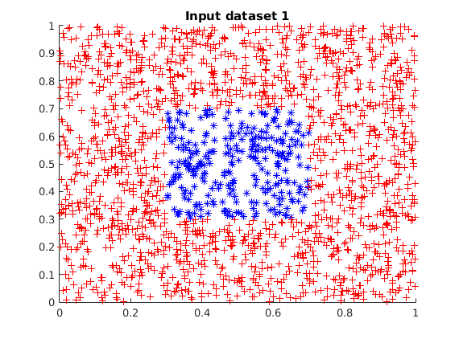
a] Adaboost for Dataset 1
close all;
T = 40; disp('****** Adaboost for Dataset 1 *****'); [ error_training,error_test,i_opt,p_opt,theta_opt,alpha ] = ... adaboost( X_training,X_test,T,y_training,y_test ); % get final classification H = strong_classifier(X,i_opt,p_opt,theta_opt,alpha);
****** Adaboost for Dataset 1 ***** Training error of the strong classifier = 0.144000 Error of the strong classifier on the test set = 0.141000 Training error of the strong classifier = 0.144000 Error of the strong classifier on the test set = 0.141000 Training error of the strong classifier = 0.144000 Error of the strong classifier on the test set = 0.141000 Training error of the strong classifier = 0.144000 Error of the strong classifier on the test set = 0.141000 Training error of the strong classifier = 0.144000 Error of the strong classifier on the test set = 0.141000 Training error of the strong classifier = 0.006000 Error of the strong classifier on the test set = 0.009000 Training error of the strong classifier = 0.144000 Error of the strong classifier on the test set = 0.141000 Training error of the strong classifier = 0.144000 Error of the strong classifier on the test set = 0.141000 Training error of the strong classifier = 0.144000 Error of the strong classifier on the test set = 0.141000 Training error of the strong classifier = 0.006000 Error of the strong classifier on the test set = 0.009000 Training error of the strong classifier = 0.144000 Error of the strong classifier on the test set = 0.141000 Training error of the strong classifier = 0.006000 Error of the strong classifier on the test set = 0.009000 Training error of the strong classifier = 0.011000 Error of the strong classifier on the test set = 0.020000 Training error of the strong classifier = 0.011000 Error of the strong classifier on the test set = 0.020000 Training error of the strong classifier = 0.011000 Error of the strong classifier on the test set = 0.020000 Training error of the strong classifier = 0.011000 Error of the strong classifier on the test set = 0.020000 Training error of the strong classifier = 0.011000 Error of the strong classifier on the test set = 0.020000 Training error of the strong classifier = 0.011000 Error of the strong classifier on the test set = 0.020000 Training error of the strong classifier = 0.011000 Error of the strong classifier on the test set = 0.020000 Training error of the strong classifier = 0.011000 Error of the strong classifier on the test set = 0.020000 Training error of the strong classifier = 0.002000 Error of the strong classifier on the test set = 0.006000 Training error of the strong classifier = 0.011000 Error of the strong classifier on the test set = 0.020000 Training error of the strong classifier = 0.002000 Error of the strong classifier on the test set = 0.006000 Training error of the strong classifier = 0.011000 Error of the strong classifier on the test set = 0.020000 Training error of the strong classifier = 0.002000 Error of the strong classifier on the test set = 0.006000 Training error of the strong classifier = 0.006000 Error of the strong classifier on the test set = 0.009000 Training error of the strong classifier = 0.002000 Error of the strong classifier on the test set = 0.006000 Training error of the strong classifier = 0.002000 Error of the strong classifier on the test set = 0.006000 Training error of the strong classifier = 0.002000 Error of the strong classifier on the test set = 0.006000 Training error of the strong classifier = 0.002000 Error of the strong classifier on the test set = 0.006000 Training error of the strong classifier = 0.002000 Error of the strong classifier on the test set = 0.006000 Training error of the strong classifier = 0.002000 Error of the strong classifier on the test set = 0.006000 Training error of the strong classifier = 0.002000 Error of the strong classifier on the test set = 0.006000 Training error of the strong classifier = 0.002000 Error of the strong classifier on the test set = 0.006000 Training error of the strong classifier = 0.002000 Error of the strong classifier on the test set = 0.006000 Training error of the strong classifier = 0.002000 Error of the strong classifier on the test set = 0.006000 Training error of the strong classifier = 0.002000 Error of the strong classifier on the test set = 0.006000 Training error of the strong classifier = 0.002000 Error of the strong classifier on the test set = 0.006000 Training error of the strong classifier = 0.002000 Error of the strong classifier on the test set = 0.006000 Training error of the strong classifier = 0.002000 Error of the strong classifier on the test set = 0.006000
a] Plotting for dataset 1
Plotting the result
figure() scatter(X(H>0,1),X(H>0,2),'b*'); hold on; scatter(X(H<0,1),X(H<0,2),'r+'); hold off title('Adaboost result for Dataset 1'); figure() hold on; plot(error_training); plot(error_test); hold off; xlabel('iters'); ylabel('error'); legend('Training set error','Test set error'); title('Adaboost for Dataset 1');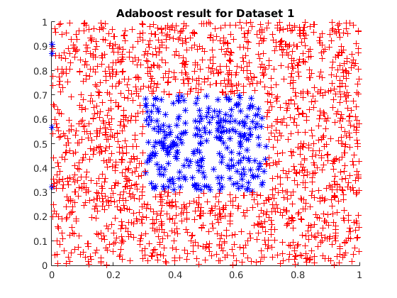 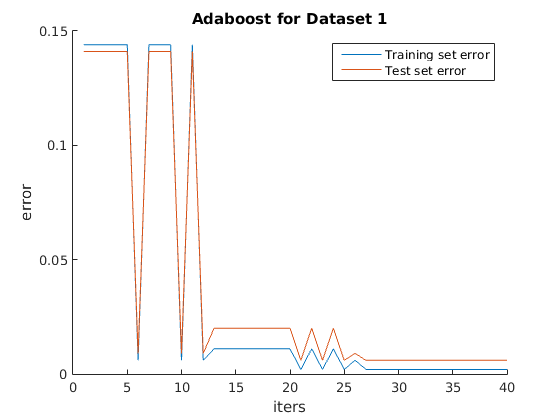
b] Generating Dataset 2
N = 2000; % Total number of points X = rand(N,2); % Each row of X corresponds to a point % Label points y = zeros(N,1); y_training = zeros(N/2,1); y_test = zeros(N/2,1); for i=1:size(X,1) if X(i,1)>=0.3 && X(i,1)<=0.7 && X(i,2)>=0.3 && X(i,2)<=0.7 y(i) = 1; % Point lies inside the rectangle bounded by x=0.3, x=0.7, y=0.3 and y=0.7 elseif (X(i,1)>0.15 && X(i,1)<0.25) || (X(i,1)>0.75 && X(i,1)<0.85) y(i) = 1; elseif (X(i,2)>0.15 && X(i,2)<0.25) || (X(i,2)>0.75 && X(i,2)<0.85) y(i) = 1; else y(i) = -1; end end % Divide the dataset into training set and test set seq = randperm(N); X_training = zeros(N/2,2); X_test = zeros(N/2,2); for i=1:N/2 X_training(i,:) = X(seq(i),:); y_training(i,:) = y(seq(i),:); X_test(i,:) = X(seq(N/2+i),:); y_test(i,:) = y(seq(N/2+i),:); end % Plotting the dataset figure() scatter(X(y>0,1),X(y>0,2),'b*'); hold on; scatter(X(y<0,1),X(y<0,2),'r+'); hold off title('Input Dataset 2');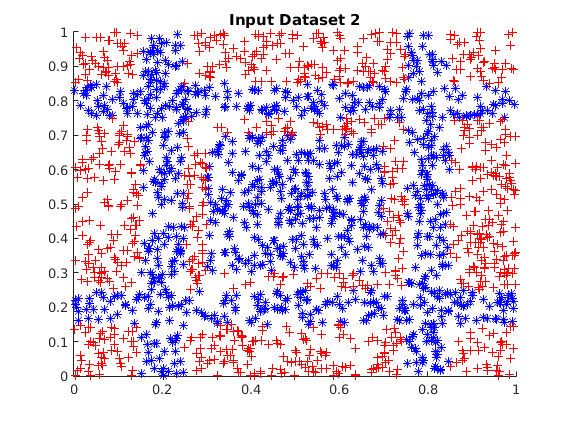
b] Adaboost for Dataset 2
close all;
T = 40; disp('****** Adaboost for Dataset 2 *****'); [ error_training,error_test,i_opt,p_opt,theta_opt,alpha ] = ... adaboost( X_training,X_test,T,y_training,y_test ); % get final classification H = strong_classifier(X,i_opt,p_opt,theta_opt,alpha);
****** Adaboost for Dataset 2 ***** Training error of the strong classifier = 0.377000 Error of the strong classifier on the test set = 0.406000 Training error of the strong classifier = 0.377000 Error of the strong classifier on the test set = 0.406000 Training error of the strong classifier = 0.370000 Error of the strong classifier on the test set = 0.383000 Training error of the strong classifier = 0.289000 Error of the strong classifier on the test set = 0.326000 Training error of the strong classifier = 0.268000 Error of the strong classifier on the test set = 0.279000 Training error of the strong classifier = 0.208000 Error of the strong classifier on the test set = 0.239000 Training error of the strong classifier = 0.233000 Error of the strong classifier on the test set = 0.250000 Training error of the strong classifier = 0.243000 Error of the strong classifier on the test set = 0.242000 Training error of the strong classifier = 0.183000 Error of the strong classifier on the test set = 0.202000 Training error of the strong classifier = 0.183000 Error of the strong classifier on the test set = 0.202000 Training error of the strong classifier = 0.219000 Error of the strong classifier on the test set = 0.253000 Training error of the strong classifier = 0.148000 Error of the strong classifier on the test set = 0.173000 Training error of the strong classifier = 0.148000 Error of the strong classifier on the test set = 0.173000 Training error of the strong classifier = 0.116000 Error of the strong classifier on the test set = 0.143000 Training error of the strong classifier = 0.116000 Error of the strong classifier on the test set = 0.143000 Training error of the strong classifier = 0.144000 Error of the strong classifier on the test set = 0.172000 Training error of the strong classifier = 0.128000 Error of the strong classifier on the test set = 0.153000 Training error of the strong classifier = 0.132000 Error of the strong classifier on the test set = 0.172000 Training error of the strong classifier = 0.128000 Error of the strong classifier on the test set = 0.153000 Training error of the strong classifier = 0.141000 Error of the strong classifier on the test set = 0.174000 Training error of the strong classifier = 0.116000 Error of the strong classifier on the test set = 0.143000 Training error of the strong classifier = 0.124000 Error of the strong classifier on the test set = 0.153000 Training error of the strong classifier = 0.110000 Error of the strong classifier on the test set = 0.132000 Training error of the strong classifier = 0.133000 Error of the strong classifier on the test set = 0.166000 Training error of the strong classifier = 0.120000 Error of the strong classifier on the test set = 0.149000 Training error of the strong classifier = 0.110000 Error of the strong classifier on the test set = 0.135000 Training error of the strong classifier = 0.109000 Error of the strong classifier on the test set = 0.130000 Training error of the strong classifier = 0.120000 Error of the strong classifier on the test set = 0.126000 Training error of the strong classifier = 0.105000 Error of the strong classifier on the test set = 0.108000 Training error of the strong classifier = 0.094000 Error of the strong classifier on the test set = 0.098000 Training error of the strong classifier = 0.094000 Error of the strong classifier on the test set = 0.098000 Training error of the strong classifier = 0.094000 Error of the strong classifier on the test set = 0.098000 Training error of the strong classifier = 0.109000 Error of the strong classifier on the test set = 0.130000 Training error of the strong classifier = 0.094000 Error of the strong classifier on the test set = 0.098000 Training error of the strong classifier = 0.109000 Error of the strong classifier on the test set = 0.130000 Training error of the strong classifier = 0.094000 Error of the strong classifier on the test set = 0.098000 Training error of the strong classifier = 0.094000 Error of the strong classifier on the test set = 0.098000 Training error of the strong classifier = 0.098000 Error of the strong classifier on the test set = 0.120000 Training error of the strong classifier = 0.094000 Error of the strong classifier on the test set = 0.098000 Training error of the strong classifier = 0.098000 Error of the strong classifier on the test set = 0.120000
b] Plotting for dataset 2
Plotting the result
figure() scatter(X(H>0,1),X(H>0,2),'b*'); hold on; scatter(X(H<0,1),X(H<0,2),'r+'); hold off title('Adaboost result for Dataset 2'); figure() hold on; plot(error_training); plot(error_test); hold off; xlabel('iters'); ylabel('error'); legend('Training set error','Test set error'); title('Adaboost for Dataset 3');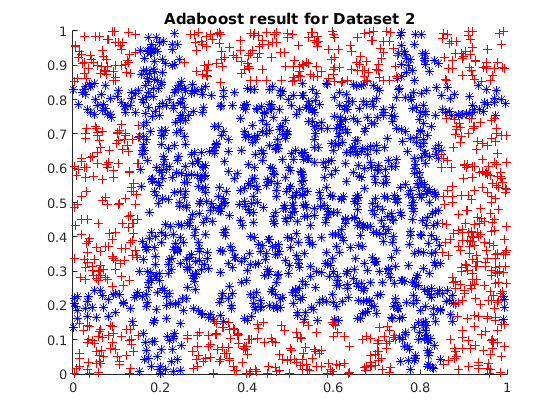 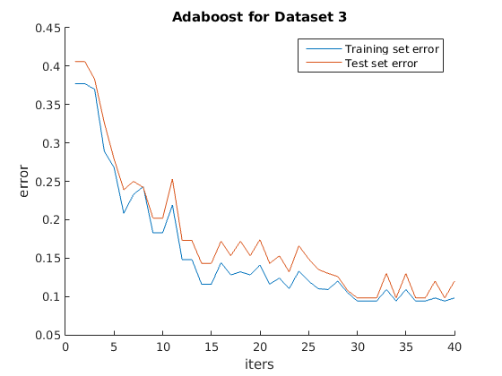
c] Generating Dataset 3
N = 2000; % Total number of points X = 2*randn(N,2); % Each row of X corresponds to a point dist = sqrt(sum(X.^2,2)); % Label points y = -1*ones(N,1); y_training = zeros(N/2,1); y_test = zeros(N/2,1); idx = dist<2; y(idx) = 1; % Divide the dataset into training set and test set seq = randperm(N); X_training = zeros(N/2,2); X_test = zeros(N/2,2); for i=1:N/2 X_training(i,:) = X(seq(i),:); y_training(i,:) = y(seq(i),:); X_test(i,:) = X(seq(N/2+i),:); y_test(i,:) = y(seq(N/2+i),:); end % Plotting the dataset figure() scatter(X(y>0,1),X(y>0,2),'b*'); hold on; scatter(X(y<0,1),X(y<0,2),'r+'); hold off title('Input Dataset 3');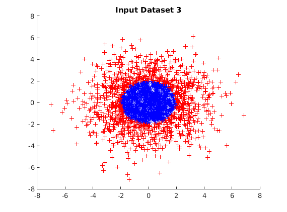
c] Adaboost for Dataset 3
close all;
T = 40; disp('****** Adaboost for Dataset 3 *****'); [ error_training,error_test,i_opt,p_opt,theta_opt,alpha ] = ... adaboost( X_training,X_test,T,y_training,y_test ); % get final classification H = strong_classifier(X,i_opt,p_opt,theta_opt,alpha);
****** Adaboost for Dataset 3 ***** Training error of the strong classifier = 0.391000 Error of the strong classifier on the test set = 0.363000 Training error of the strong classifier = 0.427000 Error of the strong classifier on the test set = 0.463000 Training error of the strong classifier = 0.391000 Error of the strong classifier on the test set = 0.363000 Training error of the strong classifier = 0.244000 Error of the strong classifier on the test set = 0.282000 Training error of the strong classifier = 0.391000 Error of the strong classifier on the test set = 0.363000 Training error of the strong classifier = 0.154000 Error of the strong classifier on the test set = 0.189000 Training error of the strong classifier = 0.238000 Error of the strong classifier on the test set = 0.269000 Training error of the strong classifier = 0.076000 Error of the strong classifier on the test set = 0.116000 Training error of the strong classifier = 0.117000 Error of the strong classifier on the test set = 0.142000 Training error of the strong classifier = 0.189000 Error of the strong classifier on the test set = 0.248000 Training error of the strong classifier = 0.117000 Error of the strong classifier on the test set = 0.142000 Training error of the strong classifier = 0.113000 Error of the strong classifier on the test set = 0.166000 Training error of the strong classifier = 0.051000 Error of the strong classifier on the test set = 0.085000 Training error of the strong classifier = 0.055000 Error of the strong classifier on the test set = 0.093000 Training error of the strong classifier = 0.051000 Error of the strong classifier on the test set = 0.085000 Training error of the strong classifier = 0.051000 Error of the strong classifier on the test set = 0.085000 Training error of the strong classifier = 0.047000 Error of the strong classifier on the test set = 0.084000 Training error of the strong classifier = 0.051000 Error of the strong classifier on the test set = 0.085000 Training error of the strong classifier = 0.044000 Error of the strong classifier on the test set = 0.075000 Training error of the strong classifier = 0.051000 Error of the strong classifier on the test set = 0.085000 Training error of the strong classifier = 0.032000 Error of the strong classifier on the test set = 0.061000 Training error of the strong classifier = 0.051000 Error of the strong classifier on the test set = 0.085000 Training error of the strong classifier = 0.039000 Error of the strong classifier on the test set = 0.058000 Training error of the strong classifier = 0.047000 Error of the strong classifier on the test set = 0.084000 Training error of the strong classifier = 0.040000 Error of the strong classifier on the test set = 0.059000 Training error of the strong classifier = 0.044000 Error of the strong classifier on the test set = 0.075000 Training error of the strong classifier = 0.040000 Error of the strong classifier on the test set = 0.059000 Training error of the strong classifier = 0.033000 Error of the strong classifier on the test set = 0.062000 Training error of the strong classifier = 0.032000 Error of the strong classifier on the test set = 0.062000 Training error of the strong classifier = 0.034000 Error of the strong classifier on the test set = 0.071000 Training error of the strong classifier = 0.029000 Error of the strong classifier on the test set = 0.053000 Training error of the strong classifier = 0.034000 Error of the strong classifier on the test set = 0.071000 Training error of the strong classifier = 0.029000 Error of the strong classifier on the test set = 0.053000 Training error of the strong classifier = 0.034000 Error of the strong classifier on the test set = 0.069000 Training error of the strong classifier = 0.029000 Error of the strong classifier on the test set = 0.053000 Training error of the strong classifier = 0.030000 Error of the strong classifier on the test set = 0.060000 Training error of the strong classifier = 0.029000 Error of the strong classifier on the test set = 0.053000 Training error of the strong classifier = 0.029000 Error of the strong classifier on the test set = 0.053000 Training error of the strong classifier = 0.029000 Error of the strong classifier on the test set = 0.053000 Training error of the strong classifier = 0.029000 Error of the strong classifier on the test set = 0.053000
c] Plotting for dataset 3
Plotting the result
figure() scatter(X(H>0,1),X(H>0,2),'b*'); hold on; scatter(X(H<0,1),X(H<0,2),'r+'); hold off title('Adaboost result for Dataset 3'); figure() hold on; plot(error_training); plot(error_test); hold off; xlabel('iters'); ylabel('error'); legend('Training set error','Test set error'); title('Adaboost for Dataset 3');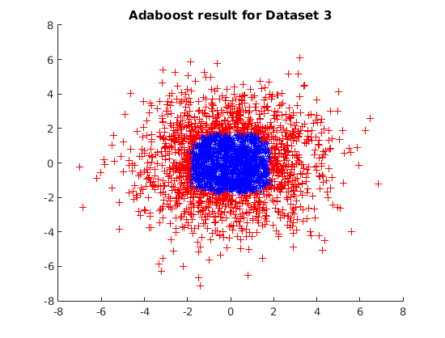 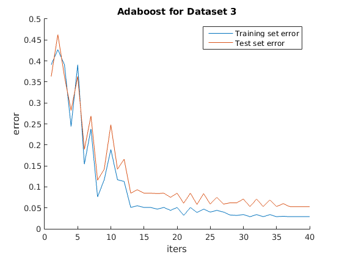
d] Generating Dataset 4
N = 2000; % Total number of points X = 2*randn(N,2); % Each row of X corresponds to a point dist = sqrt(sum(X.^2,2)); % Label points y = -1*ones(N,1); y_training = zeros(N/2,1); y_test = zeros(N/2,1); idx = dist<2 | (dist>2.5 & dist<3); y(idx) = 1; % Divide the dataset into training set and test set seq = randperm(N); X_training = zeros(N/2,2); X_test = zeros(N/2,2); for i=1:N/2 X_training(i,:) = X(seq(i),:); y_training(i,:) = y(seq(i),:); X_test(i,:) = X(seq(N/2+i),:); y_test(i,:) = y(seq(N/2+i),:); end % Plotting the dataset figure() scatter(X(y>0,1),X(y>0,2),'b*'); hold on; scatter(X(y<0,1),X(y<0,2),'r+'); hold off title('Input Dataset 4');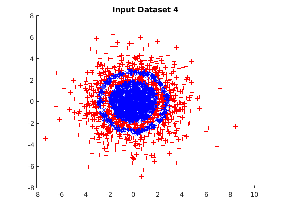
d] Adaboost for Dataset 4
close all;
T = 40; disp('****** Adaboost for Dataset 4 *****'); [ error_training,error_test,i_opt,p_opt,theta_opt,alpha ] = ... adaboost( X_training,X_test,T,y_training,y_test ); % get final classification H = strong_classifier(X,i_opt,p_opt,theta_opt,alpha);
****** Adaboost for Dataset 4 ***** Training error of the strong classifier = 0.363000 Error of the strong classifier on the test set = 0.366000 Training error of the strong classifier = 0.363000 Error of the strong classifier on the test set = 0.366000 Training error of the strong classifier = 0.256000 Error of the strong classifier on the test set = 0.264000 Training error of the strong classifier = 0.303000 Error of the strong classifier on the test set = 0.326000 Training error of the strong classifier = 0.325000 Error of the strong classifier on the test set = 0.342000 Training error of the strong classifier = 0.236000 Error of the strong classifier on the test set = 0.252000 Training error of the strong classifier = 0.285000 Error of the strong classifier on the test set = 0.300000 Training error of the strong classifier = 0.325000 Error of the strong classifier on the test set = 0.342000 Training error of the strong classifier = 0.223000 Error of the strong classifier on the test set = 0.250000 Training error of the strong classifier = 0.282000 Error of the strong classifier on the test set = 0.320000 Training error of the strong classifier = 0.290000 Error of the strong classifier on the test set = 0.324000 Training error of the strong classifier = 0.191000 Error of the strong classifier on the test set = 0.228000 Training error of the strong classifier = 0.256000 Error of the strong classifier on the test set = 0.287000 Training error of the strong classifier = 0.227000 Error of the strong classifier on the test set = 0.260000 Training error of the strong classifier = 0.210000 Error of the strong classifier on the test set = 0.244000 Training error of the strong classifier = 0.196000 Error of the strong classifier on the test set = 0.236000 Training error of the strong classifier = 0.161000 Error of the strong classifier on the test set = 0.211000 Training error of the strong classifier = 0.274000 Error of the strong classifier on the test set = 0.314000 Training error of the strong classifier = 0.146000 Error of the strong classifier on the test set = 0.177000 Training error of the strong classifier = 0.238000 Error of the strong classifier on the test set = 0.286000 Training error of the strong classifier = 0.197000 Error of the strong classifier on the test set = 0.209000 Training error of the strong classifier = 0.205000 Error of the strong classifier on the test set = 0.259000 Training error of the strong classifier = 0.186000 Error of the strong classifier on the test set = 0.210000 Training error of the strong classifier = 0.174000 Error of the strong classifier on the test set = 0.219000 Training error of the strong classifier = 0.186000 Error of the strong classifier on the test set = 0.210000 Training error of the strong classifier = 0.153000 Error of the strong classifier on the test set = 0.197000 Training error of the strong classifier = 0.153000 Error of the strong classifier on the test set = 0.197000 Training error of the strong classifier = 0.151000 Error of the strong classifier on the test set = 0.197000 Training error of the strong classifier = 0.157000 Error of the strong classifier on the test set = 0.197000 Training error of the strong classifier = 0.144000 Error of the strong classifier on the test set = 0.193000 Training error of the strong classifier = 0.157000 Error of the strong classifier on the test set = 0.197000 Training error of the strong classifier = 0.151000 Error of the strong classifier on the test set = 0.196000 Training error of the strong classifier = 0.153000 Error of the strong classifier on the test set = 0.197000 Training error of the strong classifier = 0.150000 Error of the strong classifier on the test set = 0.193000 Training error of the strong classifier = 0.154000 Error of the strong classifier on the test set = 0.194000 Training error of the strong classifier = 0.150000 Error of the strong classifier on the test set = 0.193000 Training error of the strong classifier = 0.154000 Error of the strong classifier on the test set = 0.194000 Training error of the strong classifier = 0.150000 Error of the strong classifier on the test set = 0.193000 Training error of the strong classifier = 0.160000 Error of the strong classifier on the test set = 0.196000 Training error of the strong classifier = 0.153000 Error of the strong classifier on the test set = 0.197000
d] Plotting for dataset 4
Plotting the result
figure() scatter(X(H>0,1),X(H>0,2),'b*'); hold on; scatter(X(H<0,1),X(H<0,2),'r+'); hold off title('Adaboost result for Dataset 4'); figure() hold on; plot(error_training); plot(error_test); hold off; xlabel('iters'); ylabel('error'); legend('Training set error','Test set error'); title('Adaboost for Dataset 4');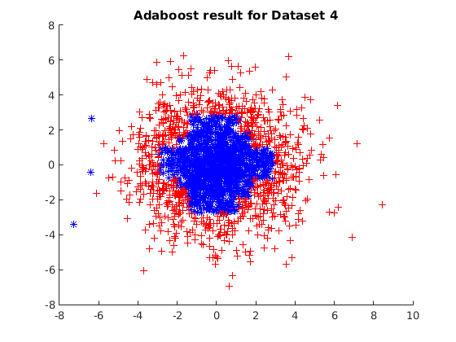 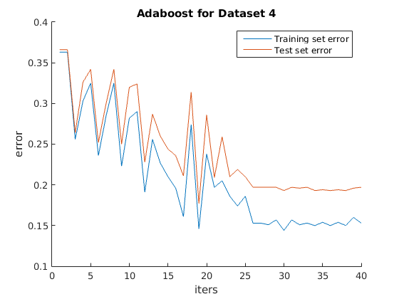